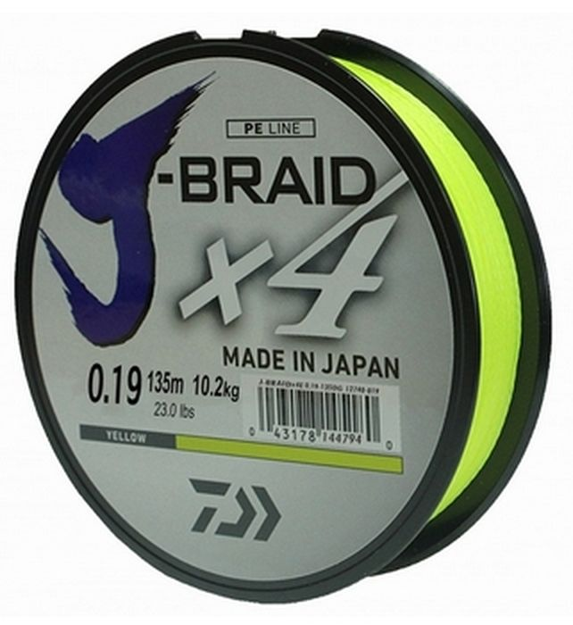

Леска
Описание товара
Шнур высокого класса с удивительным соотношением цены и качества. Качество плетения полностью соответствует японским стандартам и удовлетворяет всем требованиям. Представленные диаметры позволяют использовать шнур для всех техник ловли, начиная от Ultra-Light ловли окуня, до морской ловли палтуса, трески и так далее
КупитьХарактеристики товара
- Размотка, м. 135
- Диаметр 0,21
- Разрывная нагрузка, lb (кг) 27 (12,4)
- Количество нитей 4
- Цвет Желтый
Подробное описание товара
Отличается пониженным коэффициентом трения, а также имеет достаточно гладкую поверхность, обеспечивающую лучшее скольжение. Шнур имеет плотное четырехжильное плетение из высококачественного PE волокна. Эта серия шнуров имеет хорошую устойчивость к абразиву и отличается низкой растяжимостью. Шнур обеспечивает отличную тактильную передачу, а также позволяет полностью контролировать оснастку. Плетенка имеет отличную устойчивость к нагрузкам и разрывам, а также хорошо держит узел. Выпускается в большом разнообразии диаметров, что позволяет подобрать шнур для самых разных условий ловли.